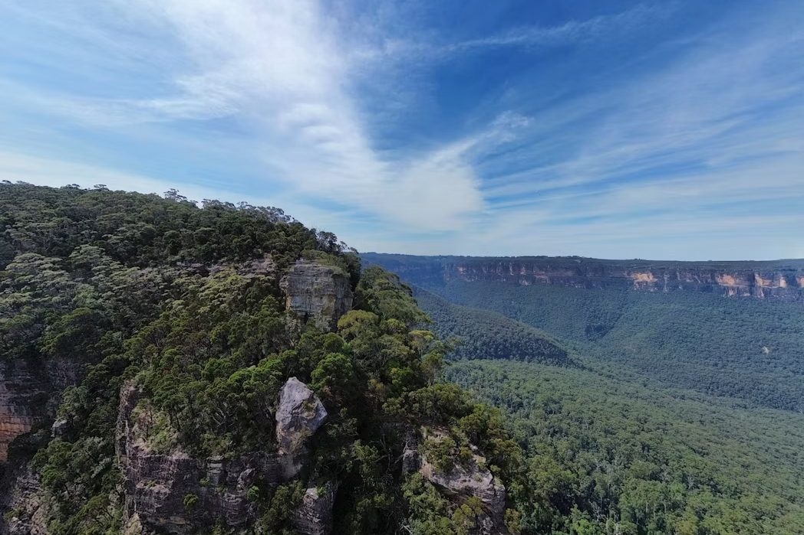

Field 014
Route feature Old Naivasha Road, Kenya 11 AUG 2026
The escarpment in wet season
Ninety kilometres from Nairobi to Naivasha on the old road, and why the descent is the only part that matters.
The old escarpment road is shorter, quieter and more interesting than the highway. In April it is also the reason riders end up in the ditch at the third hairpin. Here is how the surface actually behaves once the rain starts.
- Distance
- 92 km
- Surface
- Tarmac, broken shoulder
- Descent
- 700 m
- Riding time
- 2 h 40 dry, 3 h 30 wet
- Fuel gap
- 48 km
- Season
- Long rains, March to May
Read the story